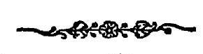

अथ
श्रीतन्त्रालोके ।
श्रीमन्महामाहेश्वराचार्याभिनवगुप्तविरचिते
श्रीजयरथकृतविवेकाख्यटीकोपेते

षड्शिमाह्निकम् ।
भवति यदिच्छावशतः शिवपूजा विश्वलाञ्छनं विश्वक् ।
विश्व जयति स सुमनाः प्रपन्नजनमोचने सुमनाः ॥ १ ॥
इदानीं द्वितीयार्धेन दीक्षितविषयां शेष-
वृत्तिं वक्तुमाह
अथोच्यते शेषवृत्ति-
जीवतामुपयोगिनी ॥ १ ॥
ननु इह
’दीक्षैव मोचयत्यूर्ध्व शैवं धाम नयत्यपि ।’
इत्याद्युक्त्या दीक्षामात्रेणैव कार्तार्थ्यमिति किं
शेषवृत्त्युपदेशेनेत्याशङ्कां गर्भीकृत्य दीक्षाभेदो-
क्तिपुरःसरं तत्प्रयोजनं प्रदर्शयति
दीक्षा बहुप्रकारेयं
श्राद्धान्ता या प्रकीर्तिता ।